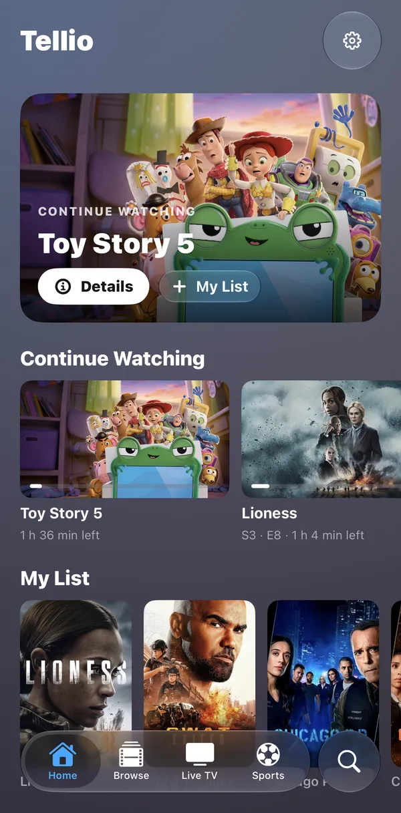
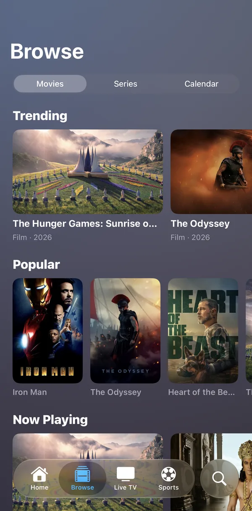
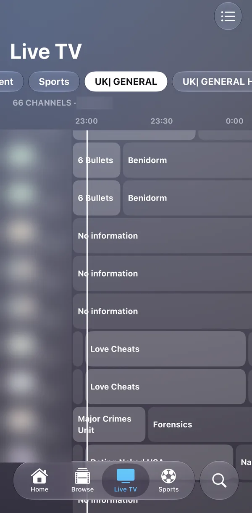
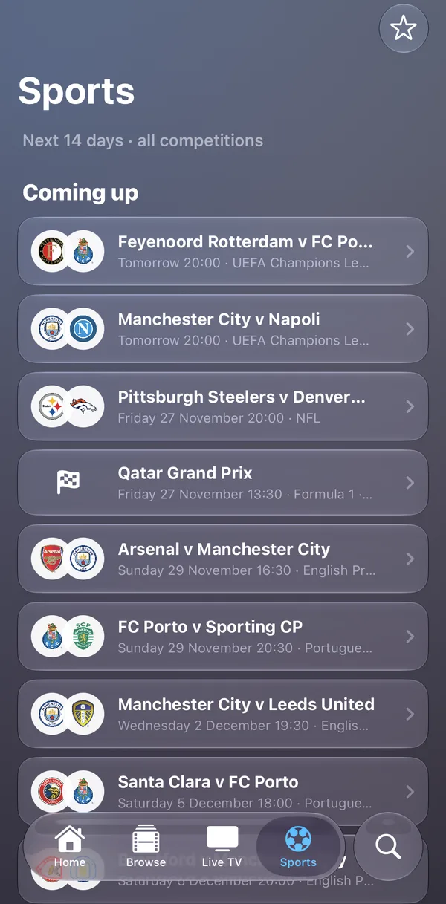
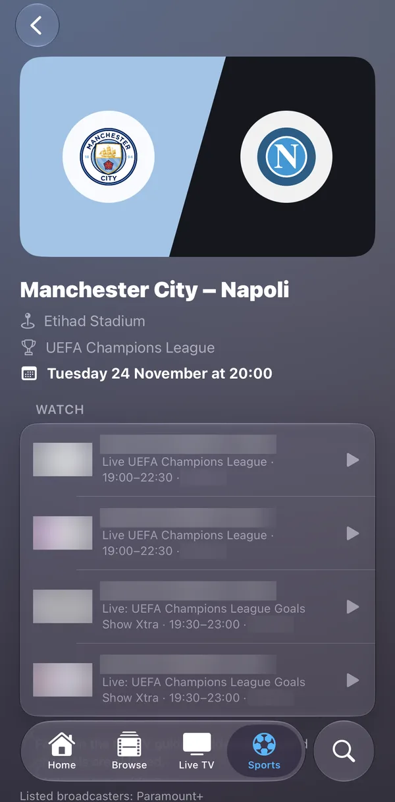
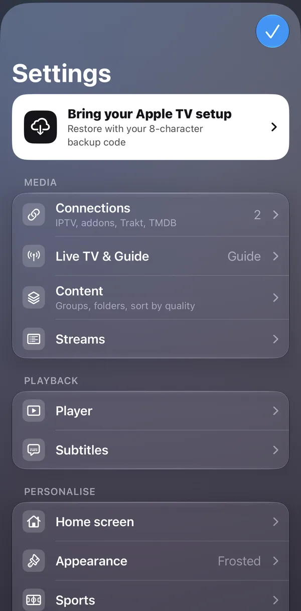

Films & series
Browse trending, popular and new titles, with seasons, episodes and cast. Pick a stream from your addons, filtered by quality.
Tellio is a native player for your own Stremio addons and IPTV account, with a proper TV guide, a sports match finder, match reminders, multiview and more. One app for the TV and your phone, with the same settings and backups. It doesn't include any channels or streams.

A short setup on first launch walks you through it. Every step can be skipped and changed later.
Your provider's Xtream Codes login or M3U playlist link, for Live TV and the guide. Several accounts? Add them all and switch.
Paste an addon's manifest link. Films, series and sports play from whatever your addons offer, and you choose what each one is used for.
Pick the teams and competitions you care about for live scores, fixtures, reminders and finding where the match is on.
Film and TV artwork and details come built in, and Trakt sign-in takes a single code. No API keys to find.
Browse trending, popular and new titles, with seasons, episodes and cast. Pick a stream from your addons, filtered by quality.
A full programme guide, favourites, folders, recent channels, channel search and a last-channel button.
Your teams' fixtures, live scores, league tables and F1 standings. Tellio searches your guide and your addons for where the match is on.
The same Tellio on your phone and tablet, with picture in picture, AirPlay and swipe to change channel. A backup from the Apple TV restores there too.
Get a reminder before your teams play. Open it and you land on the match, ready to pick where to watch.
Follow the leagues and cups you like, such as the Champions League, and get a row of today's games for each, without filling up your teams' fixtures.
Switch addons on and off, and choose what each one is used for: films, series, or sports and live TV. The same match from several addons shows as one row.
Watch up to four live channels at once on Apple TV and iPad, and two on iPhone. The sound follows whichever one is selected.
Pick up where you left off, see the next episode, and mark things watched. Syncs with Trakt if you use it.
Set a reminder from the guide and a card pops up before it starts, even over what you're watching. Choose how early, up to an hour before.
Live games, Continue Watching and what's coming up, right on the Apple TV home screen.
Lock Live TV groups and addons behind a 4-digit PIN, or hide them completely.
Keep more than one provider, with an Xtream Codes login or an M3U playlist, and switch between them. Favourites and folders stay with each account.
Back up everything to your own server, encrypted on the device, and restore it on another Apple TV, iPhone or iPad with an 8-character code.
Eight backgrounds, from Frosted and Ocean to pure Black for OLED screens.
A built-in player engine handles common video and audio formats, subtitles from your addons, and live streams.
Select a game and Tellio checks every channel in your provider's guide at kick-off, in many languages, and searches your sports addons too, showing results as they arrive. The best matches come first, and live scores update while it's on.
Scroll channels and programmes on a timeline, preview what's on, set reminders, and hide the groups you never watch.

Tellio for iPhone and iPad shares the Apple TV app's code, settings and backups. Restore your Apple TV setup with one code and everything's there: accounts, addons, favourites and teams. It needs iOS or iPadOS 26 or later.






Real screenshots, taken on an Apple TV 4K.


Tellio has no servers that stream video and no catalogue of its own. It plays what your IPTV provider and your addons give it, and adds information from public services.
Tellio isn't on the App Store yet, so for now you install it yourself, with a signing service or a free sideloading tool. It needs tvOS 18 or later on Apple TV, and iOS or iPadOS 26 or later on iPhone and iPad.
Download Tellio.ipa from GitHub, or add Tellio's source to a sideloader that reads AltStore sources and get each new build as an update.
On Apple TV, use Signulous (paid, no computer) or atvloadly (free, on a Linux machine at home). On iPhone and iPad, use SideStore, AltStore or Sideloadly.
Follow the short setup. Tellio tells you when a newer build is out.
Yes. There's no subscription and no account to make.
No. Tellio only plays what your own IPTV account and Stremio addons provide. Use services you're entitled to.
An Apple TV on tvOS 18 or later, or an iPhone or iPad on iOS 26 or later, a way to install it (see the install guide), and an IPTV account and/or Stremio addons.
On your device, in its Keychain. Backups are encrypted on the device before they're sent to the server you choose.
Yes. Back up on the Apple TV, then on iPhone or iPad choose Bring your Apple TV setup in Settings and enter the 8-character code. It works the other way round too.
Not yet. For now it's installed by sideloading.
Use Settings › About › Send feedback in the app, or open an issue on GitHub.